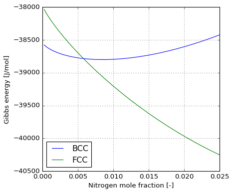
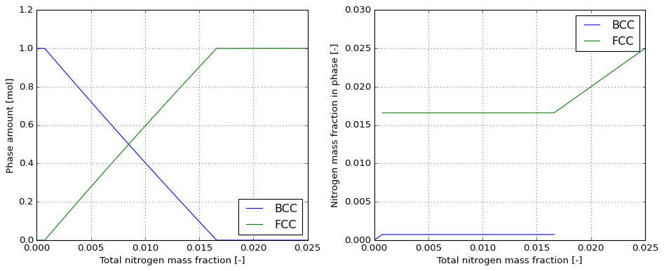

Equilibrium in Fe-N system#
In this notebook we implement a sub-lattice model to compute Fe-N equilibrium in the temperature range applicable to continuous nitriding (900-950 K) in ferrite. The primary goal is to compute solubility of nitrogen in BCC-iron. We are also interested in the computation of nitrogen activity in both BCC and FCC iron. In some cases, due to the kinetics of phase transformation in practice, FCC phase can be suppressed and only activity of nitrogen (even above solubility limit) in BCC phase is of practical interest.
In what follows the implementation is done as proposed by Frisk, K. CALPHAD. Vol. 15, No. 1, p. 79-106, 1991.
[1]:
from io import StringIO
from pandas import DataFrame
from majordome import Capturing, MajordomePlot
from matplotlib import pyplot as plt
import sys
[2]:
from casadi import (
SX,
exp,
log as ln,
heaviside,
vertcat,
dot,
nlpsol,
Function,
linspace,
)
Phases modeling#
Both BCC and FCC phases are modeled using a sub-lattice model where iron atoms occupy a first lattice and interstital sites are occupied by nitrogen or vacancies. A unit formula of \((Fe)_{a}(N,Va)_{c}\) is adopted to describe the compound, with \(a=1\) for both structures, and \(c=1\) for FCC and \(c=3\) for BCC iron. With these elements, the molar Gibbs energy of a phase is given by
where \(y_{j}\) denotes the site fractions in interstitial sublattice and besides ideal mixing and entropy terms, a single excess term is added through coefficient \(L_{Fe:N,Va}\) and magnetic contribution \(G_{m}^{mag}\). All \({}^{\circ}G\) and \({}^{\circ}L\) parameters are expressed in terms of temperature.
[3]:
def g_sublaticce(x_nn, g_fe_nn, g_fe_va, l_fe_nn_va,
c, Tc, beta, p, afm):
""" Sublattice model for BCC and FCC phases. """
# Compute site fraction of nitrogen in interstitial sub-lattice.
y_nn = (x_nn / (1 - x_nn)) * (1 / c)
# Compute site fraction of vacancies with balance.
y_va = 1 - y_nn
# Ideal mixing contribution.
gmix = y_nn * g_fe_nn + y_va * g_fe_va
# Entropy terms contribution
smix = c * R * T * (y_nn * ln(y_nn) + y_va * ln(y_va))
# Excess term contribution.
lmix = y_nn * y_va * l_fe_nn_va
# Magnetic term contribution.
gmag = gm_magnetic(y_nn, Tc, beta, p, afm)
# Compose molar Gibbs energy.
return gmix + smix + lmix + gmag
The magnetic contribution term is given by \(G_{m}^{mag}\)
where depending on Curie’s temperature \(T_{C}\)
and
Parameter \(p\) depends on structure and is 0.4 for BCC and 0.28 for FCC. If magnetization and Curie’s temperature are negative, they must be divided by \(a=-3\) for FCC (for BCC they are positive).
[4]:
def gm_magnetic(y_nn, Tc, beta, p, afm):
""" Magnetic contribution to Gibbs energy of phase. """
# Transform negative values.
Tc = Tc if Tc > 0 else Tc / afm
beta = beta if beta > 0 else beta / afm
# Composition dependency of magnetic term for FCC only.
if afm <= -3:
Tc *= (1 - y_nn)
beta *= (1 - y_nn)
# Structure parameter.
A = (518 / 1125) + (11692 / 15975) * (1 / p - 1)
def f_lo(t):
""" Function below Curie temperature. """
a = (79 / 140, 474 / 497, 1/6, 1/135, 1/600)
b = a[2] * t**3 + a[3] * t**9 + a[4] * t**15
return 1 - (a[0] / (p * t) + a[1] * (1 / p - 1) * b) / A
def f_hi(t):
""" Function above Curie temperature. """
a = (1 / 10, 1 / 315, 1 / 1500)
b = a[0] + a[1] * pow(t, -10) + a[2] * pow(t, -20)
return -1 * pow(t, -5) * b / A
# Relative temperature.
tau = T / Tc
# Select temperature range with HEAVY-SIDE function.
h = heaviside(tau - 1)
f = (1 - h) * f_lo(tau) + h * f_hi(tau)
# Assembly model.
return R * T * ln(1 + beta) * f
Model coefficients are expressed in terms of temperature as polynomials as
Other terms might be added depending on phase and its reference state.
[5]:
def gparams(a):
""" Parameter representation with 6 coefficients. """
b = a[1] + a[2] * ln(T) + a[3] * T + a[4] * T**2
return a[0] + T * b + a[5] / T
Problem construction#
To build the optimization problem we start by defining the required constants and symbols.
[6]:
# ELEMENT VA VACUUM 0.0000E+00 0.0000E+00 0.0000E+00 !
# ELEMENT FE BCC_A2 5.5847E+01 4.4890E+03 2.7280E+01 !
# ELEMENT N 1/2_MOLE_N2(G) 1.4007E+01 4.3350E+03 9.5751E+01 !
# Ideal gas constant [J/(mol.K)].
R = 8.31446261815324
# Atomic masses.
mm_fe = 5.5847E+01
mm_nn = 1.4007E+01
# Symbol for system temperature.
T = SX.sym('T')
# Symbol for total molar fraction of nitrogen.
x0 = SX.sym('x0')
# Symbols for unknowns: phases fractions and compositions.
phi = SX.sym('phi', 2)
x_nn = SX.sym('x_nn', 2)
# Aliases for phases fractions.
phi_alpha = phi[0]
phi_gamma = phi[1]
# Aliases for molar fraction in phases.
x_nn_alpha = x_nn[0]
x_nn_gamma = x_nn[1]
Next we provide \(G-H_{SER}\) for the pure elements, with reference state for iron being BCC and for nitrogen \(\frac{1}{2}N_{2}(g)\).
[7]:
# SER : BCC_A2 : CHECKED
a_ghser_fe = (1224.83, 124.134, -23.5143, -4.39752e-03, -5.89269e-08, 77358.5)
ghser_fe = gparams(a_ghser_fe)
# SER : 1/2 N2 : CHECKED
a_ghser_nn = (-3750.675, -9.45425, -12.7819, -1.76686e-04, 2.681e-09, -32374)
ghser_nn = 0.5 * gparams(a_ghser_nn)
The next cell provide all parameters for BCC description.
[8]:
# G(BCC_A2,FE:VA;0) : CHECKED
g_fe_va_alpha = ghser_fe
# G(BCC_A2,FE:N;0) : CHECKED
a_g_fe_nn_alpha = (93562, 165.07, 0, 0, 0, 0)
g_fe_nn_alpha = gparams(a_g_fe_nn_alpha) + ghser_fe + 3 * ghser_nn
# Magnetic model parameters : CHECKED.
Tc_alpha, beta_alpha, p_alpha, afm_alpha = 1043, 2.22, 0.40, -1
# BCC_A2 R-K parameter : CHECKED.
l_fe_nn_va_alpha = 0.0
# Stoichiometric parameter : CHECKED.
c_alpha = 3
The next cell provide all parameters for FCC description.
[9]:
# G(FCC_A1,FE:VA;0) : CHECKED.
a_g_fe_va_gamma = (-1462.4, 8.282, -1.15, 6.4e-04, 0.0, 0.0)
g_fe_va_gamma = gparams(a_g_fe_va_gamma) + ghser_fe
# G(FCC_A1,FE:N;0) : CHECKED.
a_g_fe_nn_gamma = (-37460, 375.42, -37.6, 0, 0, 0)
g_fe_nn_gamma = gparams(a_g_fe_nn_gamma) + ghser_fe + ghser_nn
# Magnetic model parameters: CHECKED.
Tc_gamma, beta_gamma, p_gamma, afm_gamma = -201, -2.1, 0.28, -3
# FCC_A1 R-K parameter : CHECKED.
l_fe_nn_va_gamma = -26150.0
# Stoichiometric parameter : CHECKED.
c_gamma = 1
With all these parameters in hand we compute molar Gibbs energy of each phase.
[10]:
# BCC_A2 molar Gibbs energy.
Gm_alpha = g_sublaticce(x_nn_alpha, g_fe_nn_alpha, g_fe_va_alpha,
l_fe_nn_va_alpha, c_alpha, Tc_alpha,
beta_alpha, p_alpha, afm_alpha)
# FCC_A1 molar Gibbs energy.
Gm_gamma = g_sublaticce(x_nn_gamma, g_fe_nn_gamma, g_fe_va_gamma,
l_fe_nn_va_gamma, c_gamma, Tc_gamma,
beta_gamma, p_gamma, afm_gamma)
Prepare equilibrium conditions with composition converted to mole fraction.
[11]:
def mass_to_mole_fraction(w):
""" Convert mass fraction of nitrogen into mole fraction. """
return w / (mm_nn * (w / mm_nn + (1 - w) / mm_fe))
def mole_to_mass_fraction(x):
""" Convert mole fraction of nitrogen into mass fraction. """
return x * mm_nn / (x * mm_nn + (1 - x) * mm_fe)
[12]:
@MajordomePlot.new(size=(6, 5))
def plot_gibbs(_placeholder, plot=None):
fig, ax = plot.subplots()
T_num = 943.0
y_nn_rng = linspace(0.00, 0.025, 100)
x_nn_rng = linspace(0.00, mass_to_mole_fraction(y_nn_rng[-1]), 100)
Gm_alpha_f = Function('Gm_alpha', [T, x_nn_alpha], [Gm_alpha])
Gm_gamma_f = Function('Gm_gamma', [T, x_nn_gamma], [Gm_gamma])
ax[0].plot(y_nn_rng, Gm_alpha_f(T_num, x_nn_rng), label='BCC')
ax[0].plot(y_nn_rng, Gm_gamma_f(T_num, x_nn_rng), label='FCC')
ax[0].set_xlabel('Nitrogen mole fraction [-]')
ax[0].set_ylabel('Gibbs energy [J/mol]')
ax[0].grid(linestyle=':')
ax[0].legend(loc='best')
plot = plot_gibbs(None)

These elements allow to build the following optimization problem, where \(f\) is the cost function
[13]:
# Assembly symbolicy cost function.
f = phi_alpha * Gm_alpha + phi_gamma * Gm_gamma
# Create total nitrogen content constraint.
g0 = phi_alpha * x_nn_alpha + phi_gamma * x_nn_gamma - x0
# Constrain phase fractions.
g1 = phi_alpha + phi_gamma - 1
# Create symbolic vectors.
x = vertcat(phi, x_nn)
g = vertcat(g0, g1)
p = vertcat(T, x0)
# Construct optimization problem.
opts = {'ipopt': {'print_level': 5}}
nlpt = {'x': x, 'f': f, 'g': g, 'p': p}
solver = nlpsol('solver', 'ipopt', nlpt, opts)
The computation of nitrogen activity is done as proposed by Kouba, R et al. CALPHAD, Vol. 71, 2020.
[14]:
def nitrogen_activity(kn, dg, T):
""" Nitrogen activity in material. """
return kn * exp(-dg / (R * T))
TODO: (place them here) Sample Thermo-Calc and OpenCalphad macros are provided in this directory to validate results of calculations. Consider changing temperature and composition for the different cases.
[15]:
def ce(T0_num, w0_num, kn=0.05, tol=1.0e-10):
""" Compute equilibrium at given point. """
x0_num = mass_to_mole_fraction(w0_num)
# A good initial guess is expected for now.
guess = [1, 1, x0_num, x0_num]
with Capturing() as output:
sol = solver(x0=guess, p=[T0_num, x0_num],
lbx=0, ubx=1, lbg=-tol, ubg=tol)
sol['ac'] = nitrogen_activity(kn, sol['f'], T0_num)
sol['x0'] = x0_num
sol['w0'] = w0_num
return sol, output
Output for equilibrium: 1, DEFAULT_EQUILIBRIUM 2021.12.24
Conditions .................................................:
1:T=943, 2:P=100000, 3:N=1, 4:W(N)=.0001
Degrees of freedom are 0
Some global data, reference state SER ......................:
T= 943.00 K ( 669.85 C), P= 1.0000E+05 Pa, V= 0.0000E+00 m3
N= 1.0000E+00 moles, B= 5.5830E+01 g, RT= 7.8406E+03 J/mol
G= -3.85639E+04 J, G/N=-3.8564E+04 J/mol, H= 2.1783E+04 J, S= 6.399E+01 J/K
Some data for components ...................................:
Component name Moles Mole-fr Chem.pot/RT Activities Ref.state
FE 9.9960E-01 0.99960 -4.9162E+00 7.3269E-03 SER (default)
N 3.9859E-04 0.00040 1.6698E+00 5.3109E+00 GAS
Some data for phases .......................................:
Name Status Moles Volume Form.Units Cmp/FU dGm/RT Comp:
BCC_A2.................. E 1.000E+00 0.00E+00 1.00E+00 1.00 0.00E+00 X:
FE 9.99601E-01 N 3.98589E-04
[16]:
sol, output = ce(T0_num=943, w0_num=0.0001)
sol
[16]:
{'f': DM(-38559.7),
'g': DM([1.0056e-08, 1.00598e-08]),
'lam_g': DM([34639.7, 37936.6]),
'lam_p': DM([63.9967, 34639.7]),
'lam_x': DM([609.335, -121.659, -0.00383474, -3.13667e-05]),
'x': DM([1, 2.56935e-09, 0.000398599, 0.0463803]),
'ac': DM(6.83639),
'x0': 0.0003985887274051929,
'w0': 0.0001}
Output for equilibrium: 1, DEFAULT_EQUILIBRIUM 2021.12.24
Conditions .................................................:
1:T=943, 2:P=100000, 3:N=1, 4:W(N)=.001
Degrees of freedom are 0
Some global data, reference state SER ......................:
T= 943.00 K ( 669.85 C), P= 1.0000E+05 Pa, V= 0.0000E+00 m3
N= 1.0000E+00 moles, B= 5.5681E+01 g, RT= 7.8406E+03 J/mol
G= -3.86822E+04 J, G/N=-3.8682E+04 J/mol, H= 2.1866E+04 J, S= 6.421E+01 J/K
Some data for components ...................................:
Component name Moles Mole-fr Chem.pot/RT Activities Ref.state
FE 9.9602E-01 0.99602 -4.9192E+00 7.3050E-03 SER (default)
N 3.9752E-03 0.00398 3.8087E+00 4.5090E+01 GAS
Some data for phases .......................................:
Name Status Moles Volume Form.Units Cmp/FU dGm/RT Comp:
BCC_A2.................. E 9.889E-01 0.00E+00 9.86E-01 1.00 0.00E+00 X:
FE 9.96629E-01 N 3.37061E-03
FCC_A1.................. E 1.114E-02 0.00E+00 1.05E-02 1.06 0.00E+00 X:
FE 9.42359E-01 N 5.76414E-02
[17]:
sol, output = ce(T0_num=943, w0_num=0.0010)
sol
[17]:
{'f': DM(-38641.4),
'g': DM([1.00514e-08, 1.00721e-08]),
'lam_g': DM([19045.4, 38565.7]),
'lam_p': DM([64.2396, 19045.4]),
'lam_x': DM([6.11999e-05, -6.11999e-05, -0.000366476, -1.59498e-05]),
'x': DM([0.982689, 0.0173108, 0.00293426, 0.0630674]),
'ac': DM(6.908),
'x0': 0.003975203646706774,
'w0': 0.001}
Next we perform a stepping for confrontation with Thermo-Calc calculations over the full composition range.
[18]:
w0_num = linspace(0.0, 0.025, 300).full().ravel()
data = [ce(T0_num=943, w0_num=w)[0] for w in w0_num]
[19]:
def get_item(results):
""" Retrieve results for assembly of table. """
x = results['x'].full().ravel()
f = results['f'].full().ravel()[0]
ac = results['ac'].full().ravel()[0]
return {
'X(N)': results['x0'],
'W(N)': results['w0'],
'Total Gibbs energy': f,
'NP(BCC_A2)': x[0],
'NP(FCC_A1)': x[1],
'X(BCC_A2,N)': x[2],
'X(FCC_A1,N)': x[3],
'W(BCC_A2,N)': mole_to_mass_fraction(x[2]),
'W(FCC_A1,N)': mole_to_mass_fraction(x[3]),
'ACR(N)': ac
}
df = DataFrame(list(map(get_item, data)))
df.head().T
[19]:
| 0 | 1 | 2 | 3 | 4 | |
|---|---|---|---|---|---|
| X(N) | 0.000000e+00 | 3.332845e-04 | 6.664026e-04 | 9.993544e-04 | 1.332140e-03 |
| W(N) | 0.000000e+00 | 8.361204e-05 | 1.672241e-04 | 2.508361e-04 | 3.344482e-04 |
| Total Gibbs energy | -3.854278e+04 | -3.855740e+04 | -3.856840e+04 | -3.857803e+04 | -3.858677e+04 |
| NP(BCC_A2) | 1.000000e+00 | 1.000000e+00 | 1.000000e+00 | 1.000000e+00 | 1.000000e+00 |
| NP(FCC_A1) | 1.005618e-10 | 2.433213e-09 | 3.170560e-09 | 1.304793e-09 | 5.429872e-09 |
| X(BCC_A2,N) | 1.009993e-08 | 3.332944e-04 | 6.664125e-04 | 9.993644e-04 | 1.332150e-03 |
| X(FCC_A1,N) | 4.350222e-04 | 4.558125e-02 | 4.890578e-02 | 5.374563e-02 | 5.319149e-02 |
| W(BCC_A2,N) | 2.533167e-09 | 8.361454e-05 | 1.672266e-04 | 2.508386e-04 | 3.344506e-04 |
| W(FCC_A1,N) | 1.091436e-04 | 1.183645e-02 | 1.273259e-02 | 1.404551e-02 | 1.389468e-02 |
| ACR(N) | 6.821646e+00 | 6.834379e+00 | 6.843973e+00 | 6.852387e+00 | 6.860034e+00 |
[20]:
@MajordomePlot.new(shape=(1, 2), size=(12, 5))
def plot_step(df, plot=None):
fig, ax = plot.subplots()
bcc_stable = df.loc[df['NP(BCC_A2)'] > 1.0e-06]
fcc_stable = df.loc[df['NP(FCC_A1)'] > 1.0e-06]
ax[0].plot(df['W(N)'], df['NP(BCC_A2)'], label='BCC')
ax[0].plot(df['W(N)'], df['NP(FCC_A1)'], label='FCC')
ax[0].set_xlabel('Total nitrogen mass fraction [-]')
ax[0].set_ylabel('Phase amount [mol]')
ax[0].grid(linestyle=':')
ax[0].legend(loc='best')
ax[1].plot(bcc_stable['W(N)'], bcc_stable['W(BCC_A2,N)'], label='BCC')
ax[1].plot(fcc_stable['W(N)'], fcc_stable['W(FCC_A1,N)'], label='FCC')
ax[1].set_xlabel('Total nitrogen mass fraction [-]')
ax[1].set_ylabel('Nitrogen mass fraction in phase [-]')
ax[1].grid(linestyle=':')
ax[1].legend(loc='best')
plot = plot_step(df)

TODO: re-run OC and generate images!